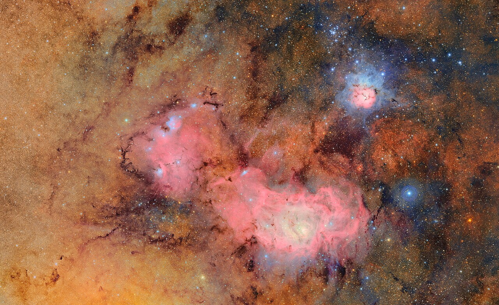
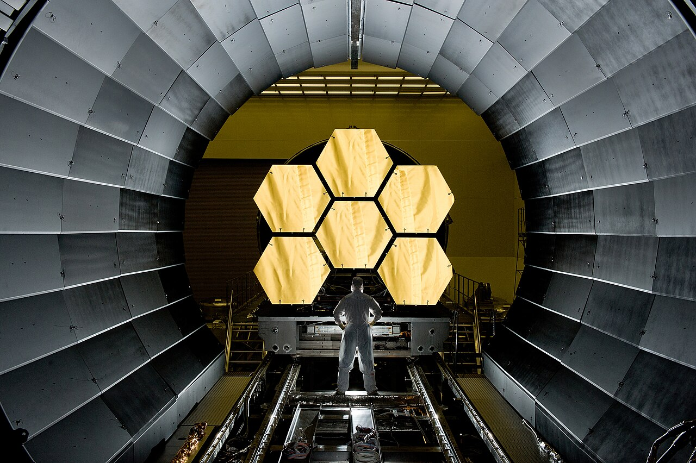
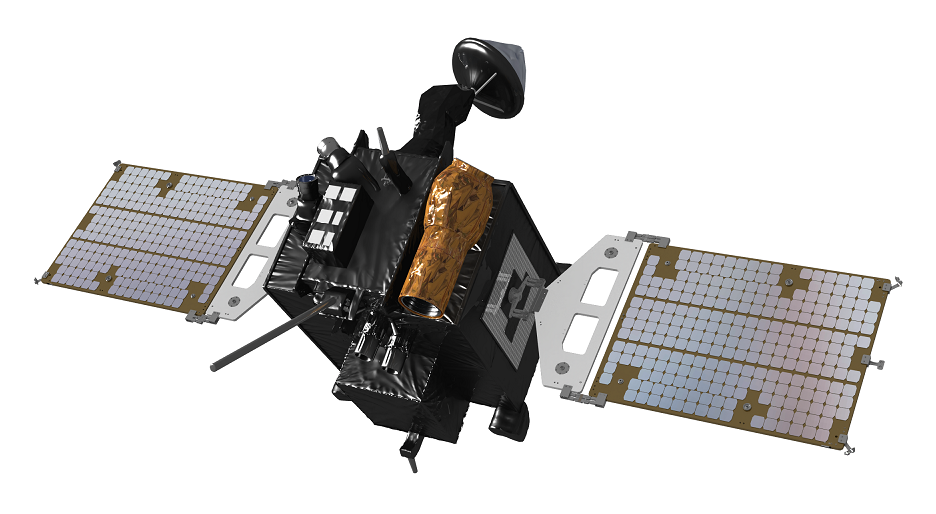
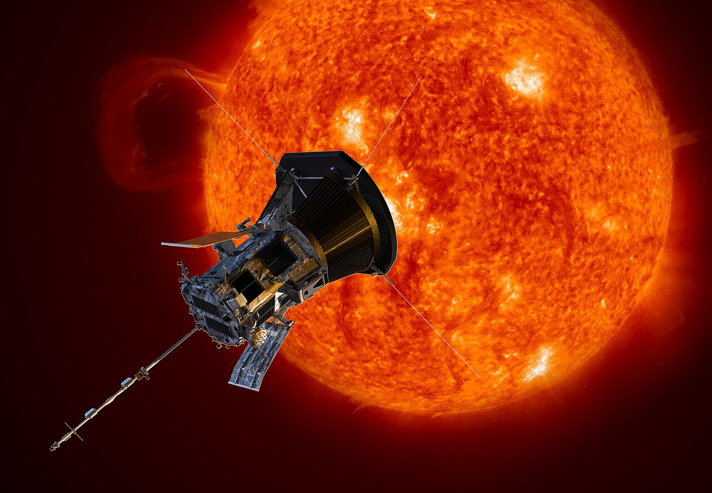
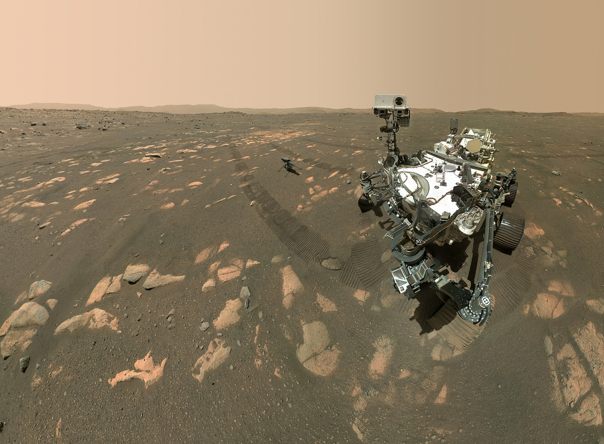

1. 우주를 조사하는 여섯 가지 방법

지상 망원경
가장 싸고 가장 크게 만들 수 있다
베라 루빈 천문대(2025) · CC BY 4.0

우주 망원경
대기 밖에서 본다 — 10쪽에서 이유를
NASA/MSFC · PD

인공위성·궤도선
천체 둘레를 돌며 오래 관측한다
과학기술정보통신부 · 공공누리 제1유형

탐사선
스쳐 지나거나 곁을 따라간다
NASA/JHU APL · PD

착륙선·탐사차
직접 내려앉아 만지고 캔다
NASA/JPL-Caltech/MSSS · PD

유인 탐사
가장 비싸고 가장 위험하다
NASA / N. Armstrong · PD
3. 모든 것이 시작된 두 장면
스푸트니크 1호 · U.S. Air Force · PD
1957 — 삐- 소리 하나로
지름 58 cm, 무게 84 kg. 하는 일이라곤 삐- 소리를 보내는 것뿐이었다. 그런데 그 소리를 아마추어 무선사들이 받아 적는 순간 세계가 뒤집혔다 — 우리 머리 위를 남의 나라 기계가 지나간다는 뜻이었기 때문이다. 이듬해 NASA가 만들어졌다.

아폴로 11호 발자국 · NASA / B. Aldrin · PD
1969 — 12년 만에 달
착륙선의 컴퓨터는 메모리가 지금 스마트폰의 10만분의 1이었다. 착륙 직전 그 컴퓨터가 경보를 울렸지만, 사람이 직접 조종간을 잡아 연료가 20초 남았을 때 내려앉았다. 이 발자국은 바람이 없어 지금도 그대로 있다.

2022년, 인류가 본 가장 깊은 사진
웹 망원경이 처음 공개한 사진이다. 이 넓이는 팔을 뻗어 든 모래 한 알만 하다. 휘어진 은하들이 보이는가 — 앞쪽 은하단의 중력이 뒤쪽 은하의 빛을 렌즈처럼 휘게 한 것이다. 20강의 딥 필드보다 더 멀리, 더 옛날을 본다.
NASA, ESA, CSA, STScI · 퍼블릭 도메인